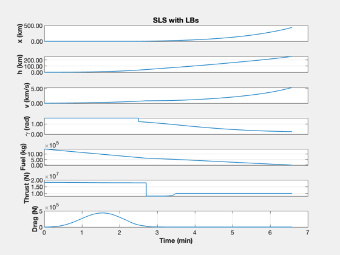

Contents
Artemis Launch Analysis
This script analyzes the SLS launch vehicle. It designs an all-liquid booster, using the same RS-25 engines, and compares the performance. It includes launch simulations.
The following gives reference information used in the script.
System
https://www.nasa.gov/exploration/systems/sls/factsheets.html http://www.braeunig.us/space/specs/sls.htm
The SLS core stage and its two solid rocket boosters (SRBs) generated a total of 8.8 million pounds of thrust
Solid Rocket Booster Details (5 segment)
Length: 177 feet (53.9 meters) Diameter: 3.71 meters Total mass: 731,885 kg each Propellant mass: 631,495 kg Propellant: polybutadiene acrylonitrile (PBAN) Thrust: 16,000 kN each Specific impulse: 242 s (sea level), 268 s (vacuum) Operational time: 127 seconds
Core Stage Details
Length: Approximately 212 feet (64.6 meters) Diameter: 27.6 feet (8.4 meters) Dry mass: Approximately 188,000 lbs (85,275 kg) Burnout mass: 112,000 kg Usable propellant mass: 979,452 kg Capacities: Liquid Hydrogen (LH2) 537,000 gallons (2 million liters) (317,000 pounds) | Liquid Oxygen (LOX)196,000 gallons (741,941 liters) (1.86 million pounds)
RS-25D Details:
Thrust: 416,300 lbs. (~1860 kN) (sea level), 512,300 lbs. (2280 kN) (vacuum) Specific impulse: 363 s (sea level), 453 s (vacuum) Dry Mass: 3,525 kg
See also: RocketModel, RocketMass, TimeHistory, LatexExp, DisplayLatexTable, AtmDens2, StdAtm, SLSLaunchAnalysis>RHS, SLSLaunchAnalysis>SRBThrustInterp, SLSLaunchAnalysis>DVParallel, SLSLaunchAnalysis>DVFromMassAndIsp
------------------------------------------------------------------------
%-------------------------------------------------------------------------- % Copyright (c) 2022 Princeton Satellite Systems, Inc. % All Rights Reserved. %-------------------------------------------------------------------------- % Since version 2023.1 % 2023.1 Pass data to StdData/RocketModel for faster simulation %--------------------------------------------------------------------------
Setup
lbToKg = 1/2.205; % kg/lb g = 9.806; % m/s^2 R_EARTH = 6378.165; % km atmData = load('AtmData.txt'); lSRB = 177*12*0.0254; % Total SRB length including nose and nozzle lSRBCyl = 177*12*0.0254*(44.67-0.08)/(46.97+4.96); % Length of actual SRB fuel tank nLB = 5; % number of liquid boosters nRS25 = 4; % Number or RS25 engines on the core nSRB = 2; % number of solid rocket bodies iSpSRBSL = 242; % iSp of SRB at sea level(s) iSpSRBVac = 268; % iSp of SRB in vacuum (s) iSpSRBAvg = (iSpSRBSL + iSpSRBVac)/2; % Average iSp of SRB massFSRB = nSRB * 631495; % Total propellant mass for both SRBs (kg) thrustRS25 = [1860 2280]*1e3*1.09; % RS-25 109% thrust [sea-level vacuum] (N) iSpRS25 = [363 453]; % RS-25 iSp [sea-level vacuum] massRS25 = 3525; % RS-25 mass mxrRS25 = 6.0; % RS-25 mixture ratio massSRB = nSRB*731885 ; % Total mass of both SRBs (kg) massFCore = (317000 + 1.86e6)*lbToKg; % Mass of core fuel (kg) massDCore = 85275; % Dry mass of core massDSRB = massSRB-massFSRB; % Total dry mass of both SRBs (kg) massCore = massFCore + massDCore; % kg massSLS = 5.75e6*lbToKg; % Total mass of SLS (kg) massUS = massSLS-massCore-massSRB; % Upper stage mass (kg) fCore = massDCore/massFCore; thrustSLSTI = nRS25*thrustRS25(1) + nSRB*SRBThrustInterp(0); % Initial SLS thrust thrustSLSTM = nRS25*thrustRS25(1) + nSRB*SRBThrustInterp(22); % Max SLS thrust rCore = 8.4/2; % Core radius rSRB = 3.71/2; % SRB radius rLB = rSRB; areaSLS = pi*(nSRB*rSRB^2+rCore^2); % SLS frontal area areaCore = pi*rCore^2; % Core frontal area % Parallel DV of SRBs and RS25s [dV,dV1,dV2,iSpPSRB,mass2] = DVParallel( [nRS25*thrustRS25(1), nSRB*SRBThrustInterp(0)],... [massFCore, massFSRB], ... [iSpRS25(1), iSpSRBSL],... [massDCore massDSRB], massUS);
SLS Properties
clear s k = 1; s{k,1} = 'Total mass'; s{k,2} = LatexExp(massSLS,'8.2','kg'); k = k + 1; s{k,1} = 'Upper stage mass'; s{k,2} = LatexExp(massUS,'8.2','kg'); k = k + 1; s{k,1} = 'Core dry mass'; s{k,2} = LatexExp(massDCore,'8.2','kg'); k = k + 1; s{k,1} = 'Core propellant mass'; s{k,2} = LatexExp(massFCore,'8.2','kg'); k = k + 1; s{k,1} = 'Core structural fraction'; s{k,2} = sprintf('%.4f',fCore'); k = k + 1; s{k,1} = 'Core radius'; s{k,2} = sprintf('%12.2f m',rCore); k = k + 1; s{k,1} = 'Number of SRBs'; s{k,2} = sprintf('%12.0f',nSRB); k = k + 1; s{k,1} = 'Parallel $\Delta V$'; s{k,2} = sprintf('%6.1f m/s',dV1); k = k + 1; s{k,1} = 'Core $\Delta V$ (SRBs released)'; s{k,2} = sprintf('%6.1f m/s',dV2); k = k + 1; s{k,1} = 'Total $\Delta V$'; s{k,2} = sprintf('%6.1f m/s',dV); k = k + 1; s{k,1} = 'Parallel $I_{sp}$'; s{k,2} = sprintf('%6.1f s',iSpPSRB); k = k + 1; s{k,1} = 'Core $I_{sp}$'; s{k,2} = sprintf('%6.1f s',iSpRS25(1)); k = k + 1; s{k,1} = 'Initial total thrust (SRB+core)'; s{k,2} = LatexExp(thrustSLSTI,'8.2','N'); k = k + 1; s{k,1} = 'Initial acceleration'; s{k,2} = sprintf('%6.3f g',thrustSLSTI/massSLS/g); k = k + 1; s{k,1} = 'Frontal area'; s{k,2} = sprintf('%6.1f m$^2$',areaSLS); disp('SLS Properties') DisplayLatexTable(s)
SLS Properties
Total mass 2.61 $\times 10^{6}$ kg
Upper stage mass 7.14 $\times 10^{4}$ kg
Core dry mass 8.53 $\times 10^{4}$ kg
Core propellant mass 9.87 $\times 10^{5}$ kg
Core structural fraction 0.0864
Core radius 4.20 m
Number of SRBs 2
Parallel $\Delta V$ 2200.5 m/s
Core $\Delta V$ (SRBs released) 6239.9 m/s
Total $\Delta V$ 8440.4 m/s
Parallel $I_{sp}$ 261.3 s
Core $I_{sp}$ 363.0 s
Initial total thrust (SRB+core) 3.66 $\times 10^{7}$ N
Initial acceleration 1.430 g
Frontal area 77.0 m$^2$
SRB Properties
clear s k = 1; s{k,1} = 'Dry Mass'; s{k,2} = LatexExp(massDSRB/nSRB,'8.2','kg'); k = k + 1; s{k,1} = 'Propellant mass'; s{k,2} = LatexExp(massFSRB/nSRB,'8.2','kg'); k = k + 1; s{k,1} = 'Propellant'; s{k,2} = 'Polybutadiene Acrylonitrile (PBAN)'; k = k + 1; s{k,1} = 'Sea level $I_{sp}$'; s{k,2} = sprintf('%6.1f s',iSpSRBSL ); k = k + 1; s{k,1} = 'Vacuum $I_{sp}$'; s{k,2} = sprintf('%6.1f s',iSpSRBVac ); k = k + 1; s{k,1} = 'Sea level thrust'; s{k,2} = LatexExp(SRBThrustInterp(0),'6.1','N'); k = k + 1; s{k,1} = 'Max thrust'; s{k,2} = LatexExp(SRBThrustInterp(22),'6.1','N'); k = k + 1; s{k,1} = 'Operational time'; s{k,2} = sprintf('%6.1f s',127); k = k + 1; s{k,1} = 'Radius'; s{k,2} = sprintf('%12.1f m',rSRB); k = k + 1; s{k,1} = 'Length'; s{k,2} = sprintf('%12.1f m',lSRB); disp('SRB Properties') DisplayLatexTable(s);
SRB Properties
Dry Mass 1.00 $\times 10^{5}$ kg
Propellant mass 6.31 $\times 10^{5}$ kg
Propellant Polybutadiene Acrylonitrile (PBAN)
Sea level $I_{sp}$ 242.0 s
Vacuum $I_{sp}$ 268.0 s
Sea level thrust 1.4 $\times 10^{7}$ N
Max thrust 1.6 $\times 10^{7}$ N
Operational time 127.0 s
Radius 1.9 m
Length 53.9 m
RS-25 Properties
clear s k = 1; s{k,1} = 'Dry mass'; s{k,2} = sprintf('%6.1f kg',massRS25); k = k + 1; s{k,1} = 'Sea level $I_{sp}$'; s{k,2} = sprintf('%6.1f s',iSpRS25(1)); k = k + 1; s{k,1} = 'Vacuum $I_{sp}$'; s{k,2} = sprintf('%6.1f s',iSpRS25(2)); k = k + 1; s{k,1} = 'Sea level thrust (109\%)'; s{k,2} = LatexExp(thrustRS25(1),'6.1','N'); k = k + 1; s{k,1} = 'Vacuum thrust (109\%)'; s{k,2} = LatexExp(thrustRS25(2),'6.1','N'); k = k + 1; s{k,1} = 'Propellant'; s{k,2} = 'Liquid O2/Liquid H2'; k = k + 1; s{k,1} = 'Mixture ratio'; s{k,2} = sprintf('6:1'); disp('RS-25 Properties') DisplayLatexTable(s)
RS-25 Properties
Dry mass 3525.0 kg
Sea level $I_{sp}$ 363.0 s
Vacuum $I_{sp}$ 453.0 s
Sea level thrust (109\%) 2.0 $\times 10^{6}$ N
Vacuum thrust (109\%) 2.5 $\times 10^{6}$ N
Propellant Liquid O2/Liquid H2
Mixture ratio 6:1
All liquid booster (LB)
massGNC = 100; % Assumed mass of GN&C system on each booster % Mass of fuel burned in parallel (core+LB) mF1 = RocketMass(iSpRS25(1),massUS+mass2+nLB*(massRS25+massGNC),fCore,dV1/1000); thrustTLB = (4+nLB)*thrustRS25(1); % Total thrust of vehicle (LB+core) uER = iSpRS25(1)*g; timeParallel = mF1*uER/thrustTLB; massFLB = nLB*thrustRS25(1)*timeParallel/uER; % LB tank will only be partially filled for the SLS with LBs massDLB = massFLB*fCore + nLB*massRS25 + nLB*massGNC; % Total dry mass for 5 liquid boosters massLB = massFLB + massDLB; tBurnLB = timeParallel; % Velocity change for parallel boostoer [dV,dV1,dV2,iSpPLB,mass2,massSLSLB] = DVParallel( [4*thrustRS25(1), nLB*thrustRS25(1)],... [massFCore, massFLB], ... [iSpRS25(1), iSpRS25(1)],... [massDCore massDLB], massUS); % Liquid booster volume volumeLB = 415.3465; lengthLBCyl = volumeLB / (pi * rLB^2); % Fuel tank length (m) lengthLB = lengthLBCyl + 2.25 + 4.5; % LB total length including nozzle and nose (m) areaSLSLB = pi * (nLB * rLB^2 + rCore^2); % SLS with 5 LBs frontal area
SLS with LB Properties
clear s k = 1; s{k,1} = 'Total mass'; s{k,2} = LatexExp(massSLSLB,'8.2','kg'); k = k + 1; s{k,1} = 'Upper stage mass'; s{k,2} = sprintf('%12.0f kg',massUS); k = k + 1; s{k,1} = 'Core dry mass'; s{k,2} = LatexExp(massDCore,'8.2','kg'); k = k + 1; s{k,1} = 'Core fuel mass'; s{k,2} = LatexExp(massFCore,'8.2','kg'); k = k + 1; s{k,1} = 'Core radius'; s{k,2} = sprintf('%12.2f m',rCore); k = k + 1; s{k,1} = 'Number of LBs'; s{k,2} = sprintf('%12.0f',nLB); k = k + 1; s{k,1} = 'Parallel $\Delta V$'; s{k,2} = sprintf('%6.1f m/s',dV1); k = k + 1; s{k,1} = 'Core $\Delta V$ (LBs released)'; s{k,2} = sprintf('%6.1f m/s',dV2); k = k + 1; s{k,1} = 'Total $\Delta V$'; s{k,2} = sprintf('%6.1f m/s',dV); k = k + 1; s{k,1} = 'Parallel $I_{sp}$'; s{k,2} = sprintf('%6.1f s',iSpPLB); k = k + 1; s{k,1} = 'Core $I_{sp}$'; s{k,2} = sprintf('%6.1f s',iSpRS25(1)); k = k + 1; s{k,1} = 'Initial total thrust (LBs+core)'; s{k,2} = LatexExp(thrustTLB,'8.2','N'); k = k + 1; s{k,1} = 'Initial acceleration'; s{k,2} = sprintf('%6.3f g',thrustTLB/massSLSLB/g); k = k + 1; s{k,1} = 'Frontal area'; s{k,2} = sprintf('%6.1f m$^2$',areaSLSLB); disp('SLS Liquid Booster Properties') DisplayLatexTable(s)
SLS Liquid Booster Properties
Total mass 1.66 $\times 10^{6}$ kg
Upper stage mass 71363 kg
Core dry mass 8.53 $\times 10^{4}$ kg
Core fuel mass 9.87 $\times 10^{5}$ kg
Core radius 4.20 m
Number of LBs 5
Parallel $\Delta V$ 2469.1 m/s
Core $\Delta V$ (LBs released) 5686.1 m/s
Total $\Delta V$ 8155.2 m/s
Parallel $I_{sp}$ 363.0 s
Core $I_{sp}$ 363.0 s
Initial total thrust (LBs+core) 1.82 $\times 10^{7}$ N
Initial acceleration 1.118 g
Frontal area 109.5 m$^2$
LB Properties
clear s k = 1; s{k,1} = 'Dry mass'; s{k,2} = LatexExp(massDLB/nLB,'8.2','kg'); k = k + 1; s{k,1} = 'Propellant mass'; s{k,2} = LatexExp(massFLB/nLB,'8.2','kg'); k = k + 1; s{k,1} = 'Propellant'; s{k,2} = 'Liquid O2/Liquid H2'; k = k + 1; s{k,1} = 'Operational time'; s{k,2} = sprintf('%6.1f s',tBurnLB); k = k + 1; s{k,1} = 'Radius'; s{k,2} = sprintf('%12.1f m',rLB); k = k + 1; s{k,1} = 'Length'; s{k,2} = sprintf('%12.1f m',lengthLB); disp('Liquid Booster Properties') DisplayLatexTable(s)
Liquid Booster Properties
Dry mass 1.16 $\times 10^{4}$ kg
Propellant mass 9.25 $\times 10^{4}$ kg
Propellant Liquid O2/Liquid H2
Operational time 162.5 s
Radius 1.9 m
Length 45.2 m
SLS SRB vs SLS LB Comparison
clear s k = 1; s{k,1} = 'Total mass'; s{k,2} = LatexExp(massSLS,'8.2','kg'); s{k,3} = LatexExp(massSLSLB,'8.2','kg'); k = k + 1; s{k,1} = 'Upper stage mass'; s{k,2} = LatexExp(massUS,'8.2','kg'); s{k,3} = LatexExp(massUS,'8.2','kg'); k = k + 1; s{k,1} = 'Core dry mass'; s{k,2} = LatexExp(massDCore,'8.2','kg'); s{k,3} = LatexExp(massDCore,'8.2','kg'); k = k + 1; s{k,1} = 'Core fuel mass'; s{k,2} = LatexExp(massFCore,'8.2','kg'); s{k,3} = LatexExp(massFCore,'8.2','kg'); k = k + 1; s{k,1} = 'Number of boosters'; s{k,2} = sprintf('%12.0f',nSRB); s{k,3} = sprintf('%12.0f',nLB); k = k + 1; s{k,1} = 'Total booster dry mass'; s{k,2} = LatexExp(massDSRB,'8.2','kg'); s{k,3} = LatexExp(massDLB,'8.2','kg'); k = k + 1; s{k,1} = 'Total booster fuel mass'; s{k,2} = LatexExp(massFSRB,'8.2','kg'); s{k,3} = LatexExp(massFLB,'8.2','kg'); k = k + 1; s{k,1} = 'Parallel $I_{sp}$'; s{k,2} = sprintf('%6.1f s',iSpPSRB); s{k,3} = sprintf('%6.1f s', iSpPLB); k = k + 1; s{k,1} = 'Initial total thrust (booster+core)'; s{k,2} = LatexExp(thrustSLSTI,'8.2','N'); s{k,3} = LatexExp(thrustTLB,'8.2','N'); k = k + 1; s{k,1} = 'Initial acceleration'; s{k,2} = sprintf('%6.3f g',thrustSLSTI/massSLS/g); s{k,3} = sprintf('%6.3f g',thrustTLB/massSLSLB/g); k = k + 1; s{k,1} = 'Frontal Area'; s{k,2} = sprintf('%6.1f m$^2$',areaSLS); s{k,3} = sprintf('%6.1f m$^2$',areaSLSLB); disp('SLS SRB vs SLS LB Comparison') DisplayLatexTable(s)
SLS SRB vs SLS LB Comparison
Total mass 2.61 $\times 10^{6}$ kg 1.66 $\times 10^{6}$ kg
Upper stage mass 7.14 $\times 10^{4}$ kg 7.14 $\times 10^{4}$ kg
Core dry mass 8.53 $\times 10^{4}$ kg 8.53 $\times 10^{4}$ kg
Core fuel mass 9.87 $\times 10^{5}$ kg 9.87 $\times 10^{5}$ kg
Number of boosters 2 5
Total booster dry mass 2.01 $\times 10^{5}$ kg 5.81 $\times 10^{4}$ kg
Total booster fuel mass 1.26 $\times 10^{6}$ kg 4.63 $\times 10^{5}$ kg
Parallel $I_{sp}$ 261.3 s 363.0 s
Initial total thrust (booster+core) 3.66 $\times 10^{7}$ N 1.82 $\times 10^{7}$ N
Initial acceleration 1.430 g 1.118 g
Frontal Area 77.0 m$^2$ 109.5 m$^2$
Simulate with LBs
dT = 0.1; n = 5000; % 20000 tGT = 150; gammaGT = (90-19.5)*pi/180; kGT = floor(tGT/dT); xP = zeros(7,n); x = [0;0;0;pi/2;massFLB + massFCore]; % [x h v gamma mFuel] massD = massDLB + massDCore + massUS; thrust = (4+nLB)*thrustRS25(1); pressureMin = StdAtm(0,atmData).pressure; pressureMax = StdAtm(80e3,atmData).pressure; pressure = [pressureMin pressureMax]; cD = 0.35; d = struct('mu',3.98600436e5,'rP',R_EARTH,'cDA',0,... 'iSp',iSpRS25(1),'thrust',0,'massD',massD); disp('Simulating with LBs...') for k = 1:n [~,drag] = RHS(x,0,d); xP(:,k) = [x;thrust;Mag(drag)]; if( x(5) < 0 ) break; end if( k == kGT) x(4) = gammaGT; end % The RS-25 thrust and iSp varies with altitude height = xP(2,k); % Current rocket height (km) % Get current RS-25 thrust and specific impulse for engines if (height <= 80) [currThrustRS25,curriSpRS25] = RocketModel(height,iSpRS25,thrustRS25,pressure,atmData); else currThrustRS25 = thrustRS25(2); curriSpRS25 = iSpRS25(2); end tSec = dT * k; % Seconds elapsed if( tSec < tBurnLB ) massD = massDCore + massUS + massDLB; thrust = (4+nLB)*currThrustRS25; d.cDA = cD*areaSLSLB; d.iSp = curriSpRS25; else massD = massDCore + massUS; thrust = 4*currThrustRS25; d.cDA = cD*areaCore; d.iSP = curriSpRS25; end d.massD = massD; d.thrust = thrust; x = RK4(@RHS,x,dT,0,d); end yL = {'x (km)' 'h (km)' 'v (km/s)' '\gamma (rad)' ... 'Fuel (kg)' 'Thrust (N)' 'Drag (N)'}; xP = xP(:,1:k); t = (0:k-1)*dT; k = 1:7; TimeHistory(t,xP(k,:),yL(k),'SLS with LBs');
Simulating with LBs...
Simulate with SRBs
dT = 0.1; tGT = 100; gammaGT = (90-19.5)*pi/180; kGT = floor(tGT/dT); n = 5000; % 20000 xP = zeros(7,n); x = [0;0;0;pi/2;massFSRB + massFCore]; massD = massDSRB + massDCore + massUS; thrust = 4*thrustRS25(1)+nSRB*SRBThrustInterp(0); % WH 1/19/23 - Changed because original thrust was using liquid boosters pressureMin = StdAtm(0,atmData).pressure; pressureMax = StdAtm(80e3,atmData).pressure; pressure = [pressureMin pressureMax]; d = struct('mu',3.98600436e5,'rP',R_EARTH,'cDA',0,... 'iSp',iSpRS25(1),'thrust',0,'massD',massD); disp('Simulating with SRBs...') for k = 1:n tSec = dT * k; % Seconds elapsed [~,drag] = RHS(x,0,d); xP(:,k) = [x;thrust;Mag(drag)]; if( x(5) < 0 ) break; end if( k == kGT) x(4) = gammaGT; end height = xP(2,k); % Current rocket height (km) % Get current RS-25 thrust and specific impulse for engines if (height <= 80) [currThrustRS25,curriSpRS25] = RocketModel(height,iSpRS25,thrustRS25,pressure,atmData); else currThrustRS25 = thrustRS25(2); curriSpRS25 = iSpRS25(2); end if( tSec <= 127 ) massD = massDCore + massUS + massDSRB; thrust = 4*currThrustRS25+nSRB*SRBThrustInterp(tSec); % WH 1/19/23 - SRB thrust varies with time d.cDA = cD*areaSLS; d.iSp = iSpPSRB; else massD = massDCore + massUS; thrust = 4*currThrustRS25; d.cDA = cD*areaCore; d.iSP = curriSpRS25; end d.massD = massD; d.thrust = thrust; x = RK4(@RHS,x,dT,0,d); end yL = {'x (km)' 'h (km)' 'v (km/s)' '\gamma (rad)' ... 'Fuel (kg)' 'Thrust (N)' 'Drag (N)'}; xP = xP(:,1:k); t = (0:k-1)*dT; k = 1:7; TimeHistory(t,xP(k,:),yL(k),'SLS with SRBs');
function dV = DVFromMassAndIsp( mF, mT, iSp ) % Compute the change in velocity, DV, from masses and iSp % dV = DVFromMassAndIsp( mF, mT, iSp ) % % mF - fuel mass % mT - total mass g = 9.806; % Acceleration of gravity uE = iSp*g; mD = mT - mF; dV = uE*log(mT/mD); end
function [dV, dV1, dV2, iSpP, mass2, massT] = DVParallel( thrust, fuel, iSp, massD, massP ) % Velocity change with parallel stages % [dV, dV1, dV2, iSpP, mass2, massT] = DVParallel( thrust, fuel, iSp, massD, massP ) % % thrust (1,2) % fuel (1,2) % Isp (1,2) % massP (1,1) mass of the stage's payload, i.e. upper stage g = 9.806; uE = g*iSp; mDot = thrust./uE; time = fuel./mDot; if( time(1) < time(2) ) k1 = 1; k2 = 2; tP = time(1); else k1 = 2; k2 = 1; tP = time(2); % tP = time parallel end % Find dV for parallel segment mF = mDot(k2)*tP + fuel(k1); iSpP = (iSp(k1)*mDot(k1) + iSp(k2)*mDot(k2))/(mDot(k1) + mDot(k2)); mT = sum(massD) + massP + sum(fuel); dV1 = DVFromMassAndIsp( mF, mT, iSpP ); % Find dV for remainder mF = fuel(k2) - mDot(k2)*tP; % amount of fuel left in core stage after parallel burn mD = massD(k2) + massP; % Dry mass of core + upper stage dV2 = DVFromMassAndIsp( mF, mD+mF, iSp(k2) ); % Mass of first stage that is not used up during parallel burn (core dry % mass + remaining fuel) mass2 = mF*(1+massD(k2)/fuel(k2)); dV = dV1 + dV2; massT = sum(massD) + massP + sum(fuel); end
function thrustSRBt = SRBThrustInterp(t) % SRB Thrust Curve Interpolation % Interpolate thrust (in N) of SLS SRB at time t seconds. % Interpolation based off thrust curve from % https://en.wikipedia.org/wiki/Space_Shuttle_Solid_Rocket_Booster#/media/File:Srbthrust2.svg time = [0 10 22 34 49 53 76 94 107 110 117 124 127]; % seconds thrust = [3.2 3.45 3.6 3.05 2.55 2.55 2.85 2.4 2.0 1.9 0.9 0.2 0] * 1e6; % lbf % Thrust of SRB at time t seconds in Newtons thrustSRBt = interp1(time,thrust,t,'linear') * 4.448; % N end
Simulating with SRBs...
function [xDot,drag] = RHS(x,~,d) % Launch vehicle dynamics % [xDot,drag] = RHS(x,~,d) % % Includes drag with AtmDens2 g = 9.806; h = x(2); v = x(3); gamma = x(4); mFuel = x(5); cG = cos(gamma); sG = sin(gamma); % Drag rho = AtmDens2(h); ... q = 0.5*rho*(v*1000)^2; if( abs(v) > 0 ) drag = q*d.cDA; else drag = 0; end % Gravity and centripetal terms r = d.rP + h; f = d.mu/r^2 - (v*cG)^2/r; % Mass mass = d.massD + mFuel; % Total acceleration vDot = (d.thrust - drag)/mass/1000 - f*sG; if( v > 0.1 && gamma ~= pi/2) gammaDot = -f*cG/v; else gammaDot = 0; end mFuelDot = -d.thrust/(d.iSp*g); xDot = [v*cG;v*sG;vDot;gammaDot;mFuelDot]; end %-------------------------------------- % $Date$ % $Id: 52d4f40a66cd1d5668f4aa0f04bc578b2fd30366 $